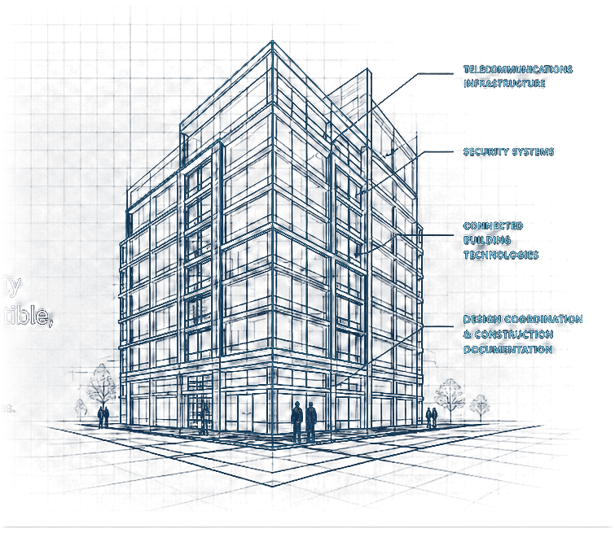

Telecommunications Infrastructure
Structured cabling, fiber optic systems, OSP, and backbone design.
ICT Infrastructure Designer
Designing telecommunications and security infrastructure that is coordinated, constructible, and built to last.
Experience across hospitality, multifamily, commercial, mixed-use, high-rise, and student housing developments throughout the United States.

From concept through construction, I deliver coordinated technology infrastructure that supports the building lifecycle and adapts as technology evolves.
Structured cabling, fiber optic systems, OSP, and backbone design.
Access control, video surveillance, intrusion detection, and integration.
Wireless infrastructure, network design, and IoT enablement.
MDF/IDF design, power, cooling, pathways, and standards compliance.
Cross-discipline coordination with architectural and MEP teams.
Revit/BIM, details, rack elevations, and system diagrams.
Telecommunications, security, wireless infrastructure, brand-standard review, and coordinated documentation.
Structured cabling, telecom rooms, fiber backbones, access control, video surveillance, and site coordination.
Coordinated ICT infrastructure across residential, hospitality, retail, parking, service, and public environments.
Good ICT design is more than placing devices.
Infrastructure should be coordinated before construction begins.
Telecommunications rooms should support future growth.
Every drawing should reduce uncertainty in the field.